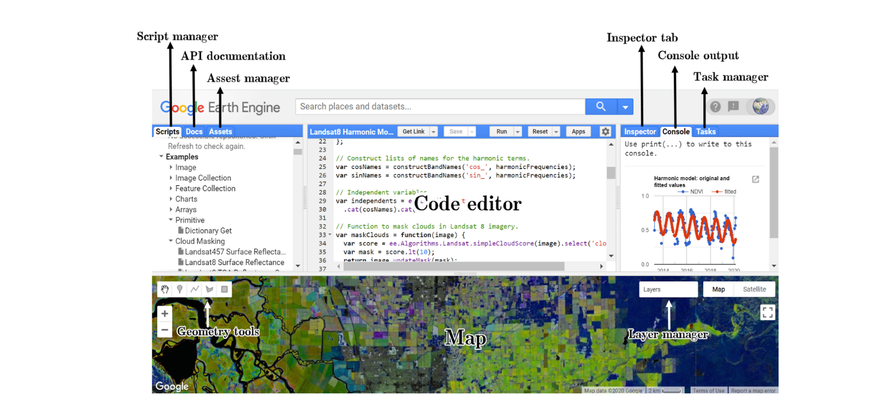
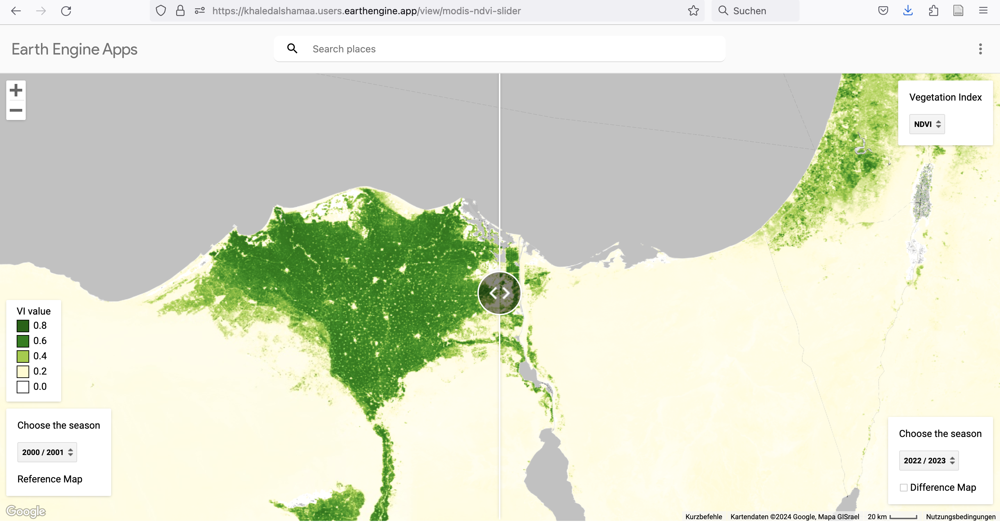
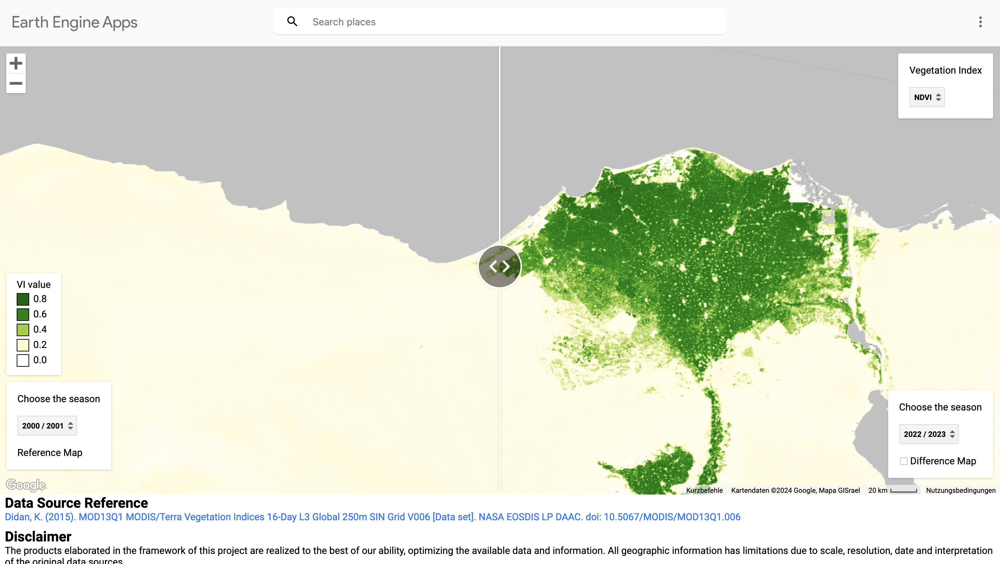
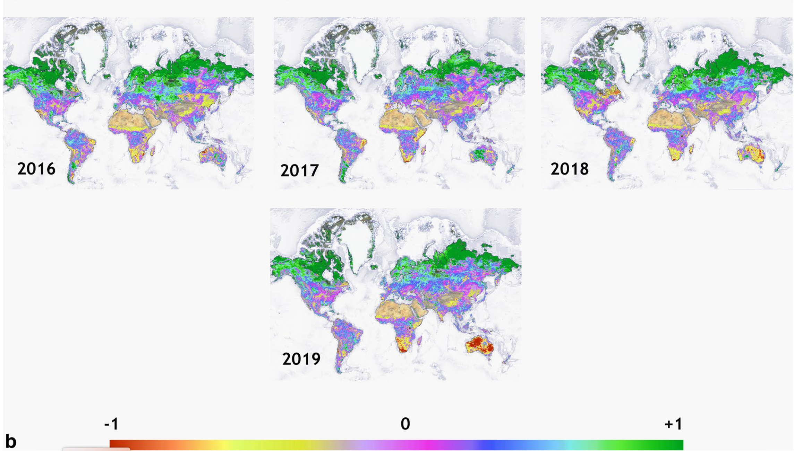
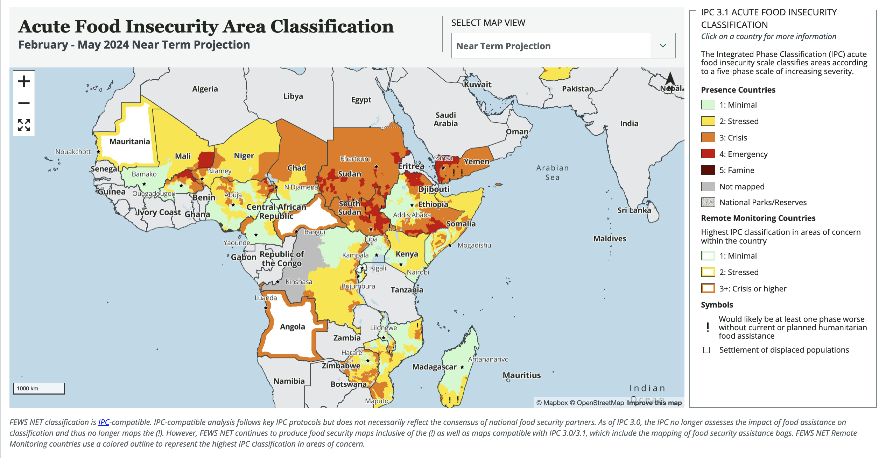

5 An Introduction to Google Earth Engine
5.1 Summary
This week, we finally started working with Google Earth Engine (GEE). I was excited about this because it is supposed to allow researchers and practitioners to cut straight to the interesting analytically steps of the work flow and make the downloading and (pre-) processing of the satellite data easier and faster. Great news for someone like me who is still a newbie to the whole coding and data science world.
In summary, GEE is a cloud-based platform developed by Google that enables users to access and analyse huge amounts of satellite data. The main advantage is that, when we do analysis on GEE it’s not running on our own machine. It is either running on the browser (client side) or on Google serves (server side). The GGE servers are very powerful and can compute huge amounts of data in seconds.
Another great thing about GEE is its data catalog where a wide range of satellite data sets are stored. For example, it holds the entire Landsat Catalog. From the Catalog, data can be loaded directly into our project and the catalog even gives you the code to do so.
An Application Programming Interface (API) is a set of rules and tools that allows different software applications to talk to each other and share information or functionality. It’s like the language we need to speak, so that a certain software can understand what we want. The GEE API supports Python and Java Script. However, Java Script was the first language used for GEE and therefore there is much more documentation for it. First, I was a little annoyed when I heard that next to Python, R, and SQL, I needed to learn yet another language. But turns out, the Java Script you need to know to use GEE is fairly simple. The main differences between Java script and R are:
Variables (or objects) as defined with var..
A specific part of your code ends with a ;
Objects are dictionaries in Javascript.
GEE allows very fast visualization during algorithm development as it deploys a pyramid of reduced resolution. This is a hierarchical structure of image tiles generated from original high-resolution imagery. This pyramid is created by systematically down scaling the resolution of the original images, producing a series of progressively lower-resolution versions. Each level of the pyramid represents a different level of detail, with the top level typically being the highest resolution and subsequent levels having progressively lower resolutions. This makes storage and retrieving images more efficient and also allows us to zoom in and out on the map and the resolution of pixels adjusting accordingly.
5.2 Application
In this week’s practical we calculated NDVI using Google Earth Engine. NDVI stands “normalized difference vegetation index” and it is used to quantify the health and density of vegetation. It is calculated from the red and near-infrared bands. The formula for NDVI is
NDVI = NIR-Red/NIR+Red
Where:
NIR represents the reflectance in the near-infrared spectral band.
Red represents the reflectance in the red spectral band.
NDVI values are normally between -1 to 1. Higher values indicate healthier or denser vegetation cover. In GEE calculating NDVI has its own function:
var NDVI_2 = clip.normalizedDifference([SR_B5, SR_B4])I will look at three applications of NDVI here ranging from pretty simple to very complex with increasing usefulness for policy making as you go down the list:
1. simple GEE engine app showing NDVI for Northern Africa
2. study using NDVI and GEE to map drought
3. predicting famine based on NDVI.
5.2.1 GEE NDVI Slider App
This app is a very intuitive introduction to NDVI. It is simply a base map of North Africa and South Asia with an NDVI layer. Different NDVI values are assigned 5 different colors to represent vegetation density/health. What’s cool about this app is that you can choose different times for the left and right hand side of the screen and then drag the image between them. It allows you to visually detect vegetation change. In my case here, I looked at the Nile Delta Region between 2000 and 2023. You can see that vegetation increased in the west and some of the coastal areas. What makes this app great, is that it is really simple to use and allows to communicate differences in vegetation in a very powerful way. In my case, it could help visualize the success of irrigation policy in the Nile Delta over the past two decades.


5.2.2 Detecting drought
NDVI can also be used to detect drought. Drought is one of the deadliest disasters that affect many regions of the world on a regular basis. In contrast to earth quakes or tsunamis, drought does not happen abruptly, but slowly develops overr time due to changes in the environment and climate. Monitoring these changes to alert to drought risk is therefore highly relevant in disaster risk management, e.g. to prevent famine (I will look more closely at famine in the next section.)
Khan and Gilani (2021) developed a global Drought Severity Index (DSI) using Google Earth Engine. The study uses MODIS terra data. The parameters used to develop the index are NDVI combined with evapotranspiration (ET) and potential evapotranspiration (PET). Evapotranspiration (ET) and Potential Evapotranspiration (PET) are indicate how much water is transferred from the earth to the atmosphere through evaporation from soil and transpiration from vegetation. ET and PET data sets are in the GEE catalog from 2001 to to now. The study develops annual DSI maps using the median DSI value.
This study in interesting for comparing how severely different regions suffer from drough and if we can defect changes over time. However, it says nothing about the impact of drought on people.

5.2.3 Predicting Famine
The worst impact related to drought is famine, but not every drought leads to famine. Famine, in contrast to drought however, is a man made disaster. As Alex De Waal (2017) argues, famine is driven by political conflict, embargoes and blockades, hostility against humanitarian principles and a volatile global economies or shocks. Therfore, understanding famine needs to combine data about drought with a range of other data sets on conflict, humanitarian access, population, food security, global value chains and so on.
USAID has been running the Famine Early Earning System Network since 1980s and is one of the major providers for evidence based early warning information on current and future food insecurity. They developed a Acute Food Insecurity Area Classification Map. They use satellite data to understand drought but enrich this with a range of other analysis including conflict, migration, market and trade

This is a good example that remote sensing analysis is often most powerful for decision making when it is combined with other data sets. Its really cool that GEE allows you to do analysis at global scale and then zoom in on specific countries or regions. But the last example, shows how important it is to not overestimate the power of remote sensing. Often, it needs to be combined with other contextual data sets in order to make to most useful for e.g. planning a humanitarian response programme.
5.3 Reflection
GEE almost sounds a bit too good to be true, especially because it is free to use, at least for non-commercial purposes. I was curious to understand some of the issues or challenges related to GEE and had a look through the literature of this week. According to (amaniGoogleEarthEngine2020?), Gorelick et al. (2017), some of the limitation include:
Limited storage of 250GB for each user and limited memory to train machine learning algorithms.
No control over how computations are run in the back end, however, this is also why it is easy to use and fast.
Interactive session limits and constraints on session duration and requests hinder flexibility.
In addition, to these technical issues, I could imagine that if you get started right away with GEE, you may lack some understanding of pre-processing of data and the decisions taken for corrections and enhancement, as well as the assumptions and mechanics of some of the classification models applied (more on this in the next 2 weeks). This may lead to misinterpretation of results.
In my view another risk related to the proliferation of remote sensing in planning practice is that it may lead to a very dominantly technocratic approach to decision making. While this is of course helpful and important, it is not the only valuable way to understand cities. Cities are complex living organisms and often best understood through different analytically lenses. Understanding the lived experience of people, cultural meaning of places and practices or political agenda is equally important to fully understand how cities work. For example, it is really useful to understand where flood risk areas are in a city, and remote sensing is a great way to do so, but it is also important to understand why people decide to settle there and perhaps reject resettlement policies, stakeholder engagement is a good way to understand this.